Snakes of Sierra Leone
67 living snake species are recorded in Sierra Leone in SnakeList: 21 venomous and 46 non-venomous, from 10 families.
- 67living species
- 10families
Danger to people · tap a number to show only those snakes
Harmful = dangerously venomous + giant constrictors. Harmless = not venomous and not a giant constrictor. Mildly venomous snakes have no serious bites to people documented. Any snake can bite.
These totals count the unique living snake species SnakeList records in Sierra Leone. A species counts if it is recorded anywhere in the country, so not every snake lives in every part of it.
In SnakeList’s checklist filters
How many of the 67 living species here each filter in the SnakeList app picks out – tap a number to show only those snakes.
Snake family6 types, 10 families
Type
Family
Habitats14 habitat groups
Habitats are estimated from where each snake is recorded and what kind of snake it is, as in the app; a snake can count in several.
Characteristics21 venomous, 3 constrictors
Constrictor and Non-constrictor count only snakes whose family or genus is documented as constricting or not; the rest are not documented.
Other filters5 popular, 10 rare
- 0extinct
Species
Showing 67 species
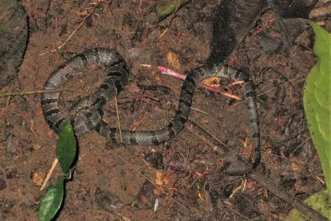
African Banded SnakeChamaelycus fasciatus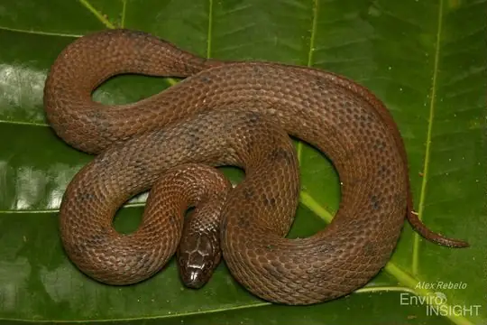
African Brown Water SnakeAfronatrix anoscopus African Rock PythonPython sebae
African Rock PythonPython sebae Ball PythonPython regius
Ball PythonPython regius- No photo yetBlack Centipede-eaterAparallactus niger
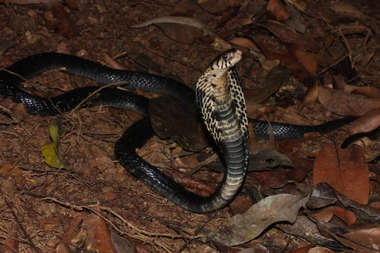
Black Forest CobraNaja guineensis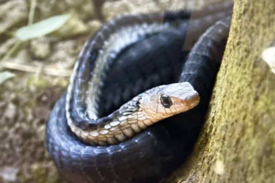
Black Tree Snake (occidentalis)Thrasops occidentalis Black-lined Green SnakeHapsidophrys lineatus
Black-lined Green SnakeHapsidophrys lineatus Black-necked Spitting CobraNaja nigricollis
Black-necked Spitting CobraNaja nigricollis Blandings Tree SnakeToxicodryas blandingii
Blandings Tree SnakeToxicodryas blandingii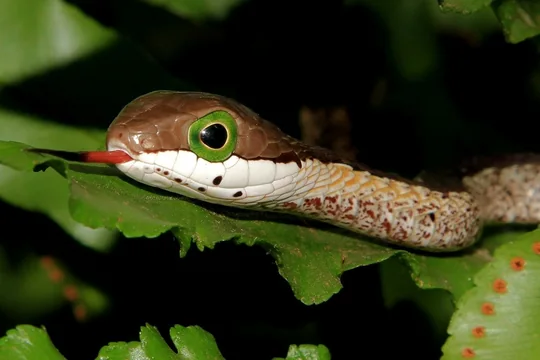
BoomslangDispholidus typus Brown House Snake (fuliginosus)Boaedon fuliginosus
Brown House Snake (fuliginosus)Boaedon fuliginosus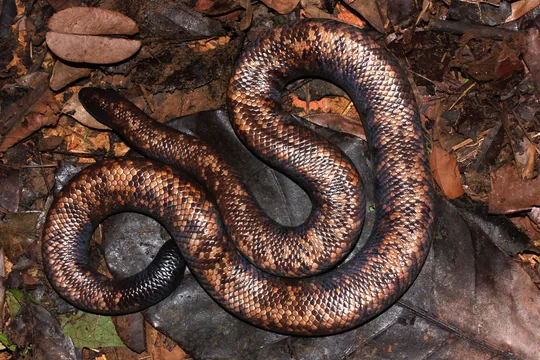
Calabar Ground PythonCalabaria reinhardtii Central African Egg-eating SnakeDasypeltis fasciata
Central African Egg-eating SnakeDasypeltis fasciata Confusing Egg EaterDasypeltis confusa
Confusing Egg EaterDasypeltis confusa- No photo yetDark-bellied HousesnakeBoaedon variegatus
 Dull Purple-glossed SnakeAmblyodipsas unicolor
Dull Purple-glossed SnakeAmblyodipsas unicolor Eastern Crowned Smooth SnakeMeizodon regularis
Eastern Crowned Smooth SnakeMeizodon regularis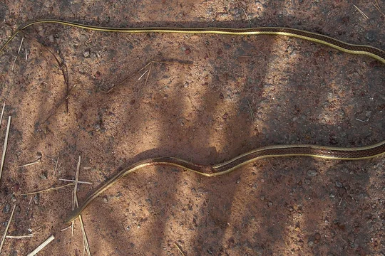
Elegant Sand RacerPsammophis elegans Emerald Green SnakePhilothamnus heterodermus
Emerald Green SnakePhilothamnus heterodermus Emerald SnakeHapsidophrys smaragdinus
Emerald SnakeHapsidophrys smaragdinus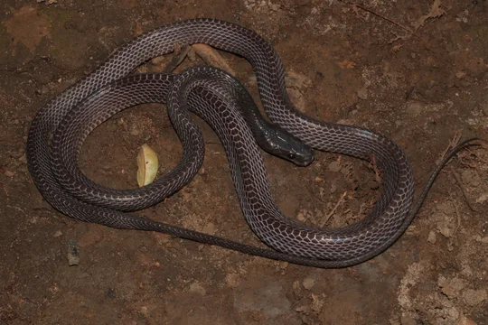
Equatorial File SnakeMehelya poensis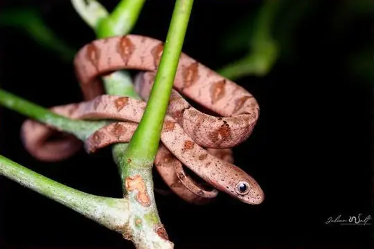
Fischer's Cat SnakeToxicodryas pulverulenta Ghana Herald SnakeCrotaphopeltis hippocrepis
Ghana Herald SnakeCrotaphopeltis hippocrepis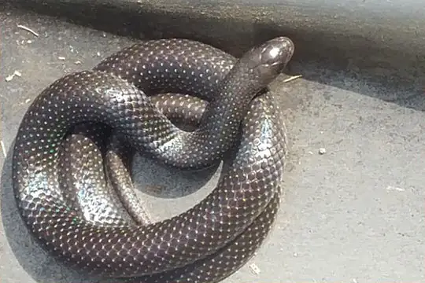
Ghana Shovel-snoutProsymna meleagris Green Bush SnakePhilothamnus nitidus
Green Bush SnakePhilothamnus nitidus Green Bush ViperAtheris chlorechis
Green Bush ViperAtheris chlorechis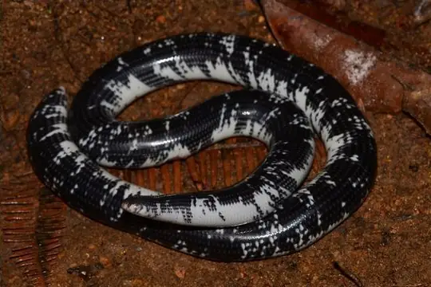
Guinea Blind SnakeAfrotyphlops liberiensis- No photo yetGuiral's File SnakeLimaformosa guirali
 Hallowell's House SnakeBoaedon virgatus
Hallowell's House SnakeBoaedon virgatus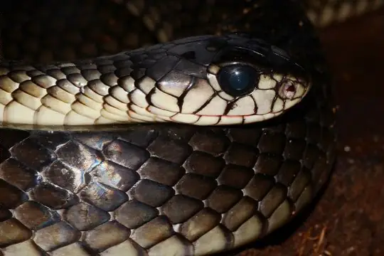
Hoodless CobraPseudohaje nigra Irregular Green SnakePhilothamnus irregularis
Irregular Green SnakePhilothamnus irregularis Kirtland's Twig SnakeThelotornis kirtlandii
Kirtland's Twig SnakeThelotornis kirtlandii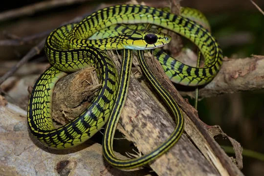
Large-eyed Green TreesnakeRhamnophis aethiopissa Lined Olympic SnakePsammophis lineatus
Lined Olympic SnakePsammophis lineatus Lineolate Blind SnakeAfrotyphlops lineolatus
Lineolate Blind SnakeAfrotyphlops lineolatus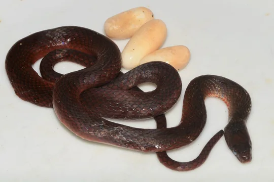
Marsh Snake (fuliginoides)Natriciteres fuliginoides Mole Viper (aterrima)Atractaspis aterrima
Mole Viper (aterrima)Atractaspis aterrima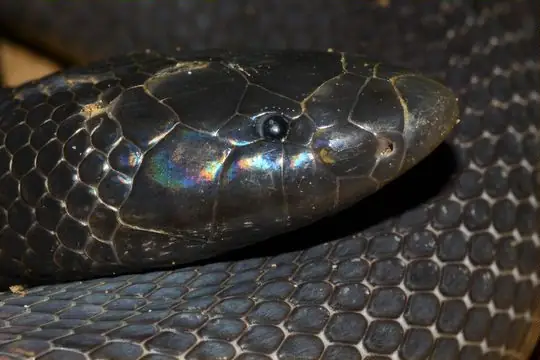
Mole Viper (corpulenta)Atractaspis corpulenta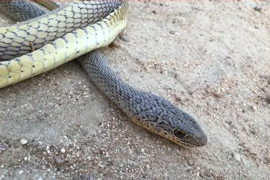
Olive Grass RacerPsammophis phillipsii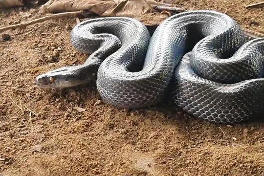
Olive House Snake (olivaceus)Boaedon olivaceus Pale Wolf SnakeLycophidion irroratum
Pale Wolf SnakeLycophidion irroratum Puff AdderBitis arietans
Puff AdderBitis arietans Red-Black Striped SnakeBothrophthalmus lineatus
Red-Black Striped SnakeBothrophthalmus lineatus Red-lipped SnakeCrotaphopeltis hotamboeia
Red-lipped SnakeCrotaphopeltis hotamboeia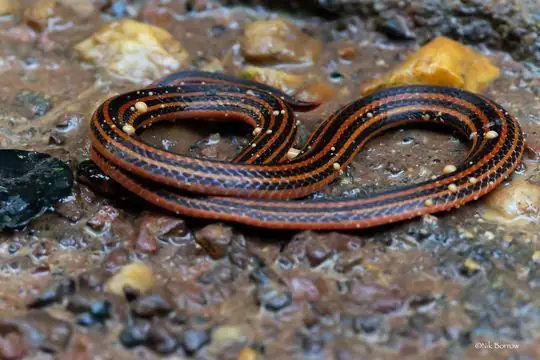
Reinhardt's Snake-eaterPolemon acanthias Rhinoceros ViperBitis rhinoceros
Rhinoceros ViperBitis rhinoceros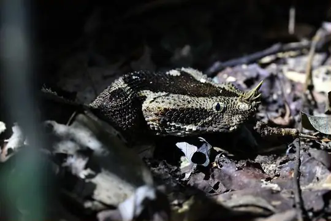
Rhinoceros Viper (nasicornis)Bitis nasicornis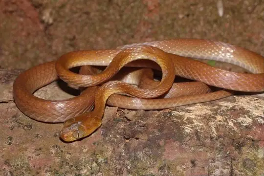
Short-snouted Tree SnakeDipsadoboa brevirostris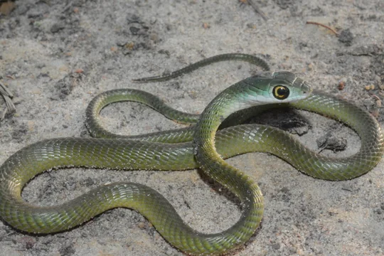
Slender Green SnakePhilothamnus heterolepidotus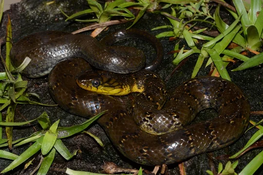
Smith's African Water SnakeGrayia smithii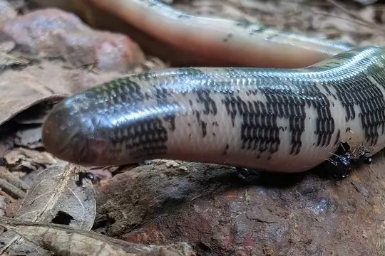
Spotted Blind SnakeAfrotyphlops punctatus Spotted Bush SnakePhilothamnus semivariegatus
Spotted Bush SnakePhilothamnus semivariegatus Spotted Night AdderCausus maculatus
Spotted Night AdderCausus maculatus Spotted Wolf SnakeLycophidion albomaculatum
Spotted Wolf SnakeLycophidion albomaculatum Striped House SnakeBoaedon lineatus
Striped House SnakeBoaedon lineatus Striped Sand SnakePsammophis sibilans
Striped Sand SnakePsammophis sibilans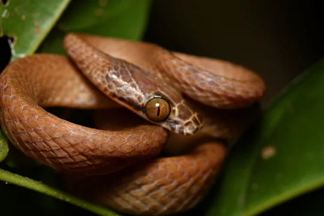
Uganda House SnakeHormonotus modestus Underwood's Tree SnakeDipsadoboa underwoodi
Underwood's Tree SnakeDipsadoboa underwoodi Variable Cat SnakeTelescopus variegatus
Variable Cat SnakeTelescopus variegatus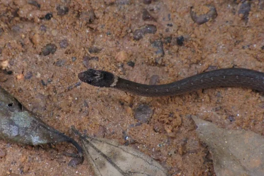
Variable Marsh Snake (variegata)Natriciteres variegata Western Forest Centipede-eaterAparallactus modestus
Western Forest Centipede-eaterAparallactus modestus Western Green MambaDendroaspis viridis
Western Green MambaDendroaspis viridis Yabassi Tree SnakeDipsadoboa duchesnii
Yabassi Tree SnakeDipsadoboa duchesnii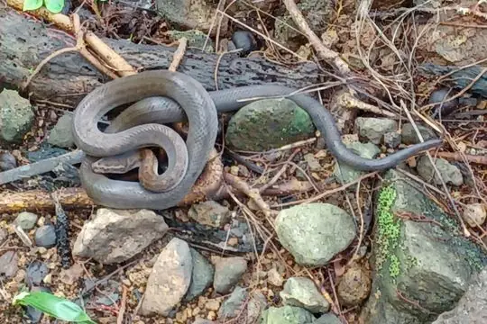
Boaedon mendesi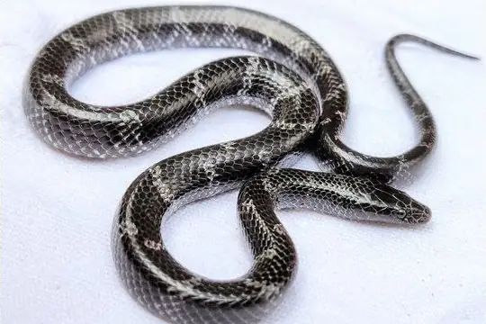
Lycophidion semicinctum- No photo yetPhilothamnus belli
No snakes in Sierra Leone match.
Sierra Leone’s snakes in numbers
- Families: Colubridae 27, Lamprophiidae 14, Atractaspididae 6, Viperidae 5, Elapidae 4, Psammophiidae 4, Typhlopidae 3, Pythonidae 2, Boidae 1, Prosymnidae 1.
How precisely they are recorded
Of the 67 living species recorded in Sierra Leone, 9 are recorded by province in SnakeList’s data; 58 are recorded only for Sierra Leone as a whole, so the province pages list them as possible rather than recorded. SnakeList records each species by province, not by exact spot, so a species listed for a province may live in only part of it.
Provinces
The provinces where SnakeList records snakes, with how many living species are recorded in each. Each page has its species, venomous snakes, families, the species found only there, its cities and neighbours.
- Eastern 2 species
- Northern 5 species
- Southern 1 species
- Western Area 3 species
No place matches that.
Cities
Its biggest cities, biggest first. SnakeList records snakes by province, not by city, so each city page shows the species recorded in its province and, separately, those only possible there - not species confirmed in the city.
- Freetown Western Area
No place matches that.